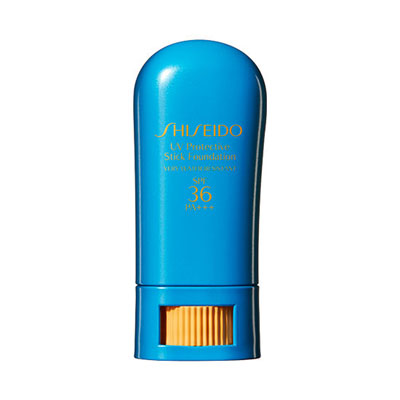
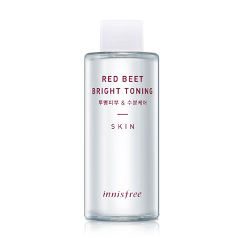

스틱파운데이션이 생겼습니다!!
휴대하기 좋아서 하나쯤 갖고싶었는데
두껍게 발리고 매트할거라는 선입관때문에 구매를 망설이고 있었더랬죠
근데 엄마님께서 제주 댕겨오시면서 사다주셨음
우헤헷 감사//
사용해본 소감은 대만족 입니다 :D :D :D
편하고 가볍게 발리고 생각한것보다 뻑뻑하지도 않아요
휴대하기 좋고 이래저래 매우 마음에 들어하면서 매일 사용중입니다
지금은 약간 시들해졌지만
시세이도 파란팩트도 여름에 엄청 열심히 사용했는데
스킨케어나 파운데이션 라인이 잘 맞는거 같아요
그리고 또 최근에 맘에든건

이니스프리 레드비트 토너
닦아내는 용으로 에뛰드하우스 원더포어를 계속 재구매해서
사용중이었는데 다른게 써보고 싶어서 집어왔습니다
화장솜에 묻혀서 아낌없이 사용했더니 3주만에 한통 다 비우고
하나 또 사왔어요 :P
산뜻하고 향도 거진 무향에 가깝고 취향입니다 헛헛
스킨로션 잘못 선택하면 얼굴에 바로 반응이 와서
새로운 제품 선택하는게 조심스러운데
이번엔 둘다 맘에들어서 느므 기쁘네욤 :3
그나저나 공병가져다 주면 포인트 적립해주는거 나 이번에 처음 알았....
내가 그동안 그냥 버린 클렌징 / 리무버가 몇개인데에에에 ;ㅂ;
화장품 구매 로테이션이 왜 계절을 타는지 모르겠지만 ㅡㅡ;;
겨울이 지나고 날이 따닷해지니까
아이고 색조는 무슨 피부나 신경써야지 하면서
스킨케어와 파운데이션쪽을 기웃거리고 있습니다 ㅋㅋㅋ
매장들어가서 좀 맘편하게 구경하고 싶은데
너무 옆에서 두손모으고 지켜봐서 힘들어요 ㅠㅠ
그게 그분들이 해야하는 일이란건 아는데
부...부담스러워;;;;
스몰마인드는 이래저래 쇼핑하기 힘듭니다;;